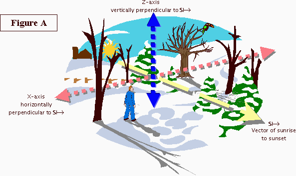
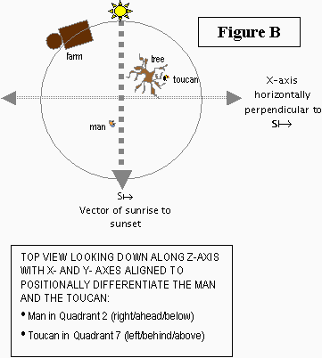
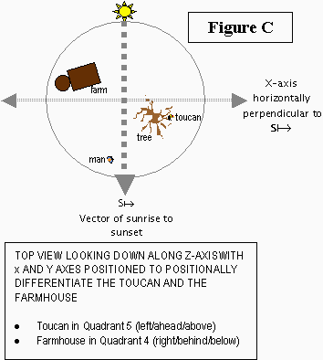
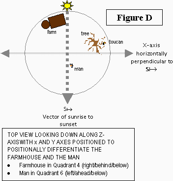

Le terme lexico-semantique se réfère à la relation entre le lexique d'un langage (i.e. ses mot-racines) et les catégories sémantiques variées possibles créée par l'esprit humain. Tous les langages (et particulièrement toutes les familles de langages) divisent le monde différement en terme de quel sorte de concepts sont “mis en mots”, et comment la signification de ces mots reflètent la réalité autour de nous. En d'autres termes, la lexico-sémantique est la réponse d'une langue à la question quelles concepts sémantiques le langage psycho-linguistique catégorise des mots autonomes et comment chacune de ces catégories est organisé de façon interne?
La lexico-sémantique est extrêmement importante en ithkuil pour deux raisons:
1) La morpho-phonologie de l'ithkuil permet seulement 3600 mots racines comme cela est expliqué dans le chapitre 2. Cela signifie que les concepts étant choisis pour être ces racines doivent être très attentivement sélectionner pour s'assurer de la plus grande échelle de conceptualisation possible avec des ressources limitées.
2) Nous avions vu à travers ce travail comment al structure grammatical matriciel de l'ithkuil permet une incroyable quantité de synergie en terme de déclinaison des mots morphologiquement parlant. Cela génère des concepts nouveaux et émergents de ces mots racines et pas simplement des déclinaisons ou conjugaisons transparentes. Pour s'assurer du maximum de dynamisme dans la déclinaison de ces nouveaux concepts qui existe morphologiquement depuis ces mots racines, il est important que les racines initiales soient prudemment choisies en termes de sens.
Dans ce chapitre, il sera examiner les considérations qui vont dans l'assignation de ces concepts à ces 3600 racines, dans le but d'accomplir optimalement ce qui a été démontré à travers ce travail: utiliser les dynamiques de la morphologie de l'ithkuil pour éléminer le besoin de centaines de milliers d'autres mots racines de langages naturelles; ou plus familièrement, “avoir le plus d'‘eau’ lexico-sémantique quipasse dans le ‘moulin’ morpho-phonologie”.
On commencera tout d'abord avec une révision des composantes dans un design systématique de la morphologie d'ithkuil. Cela sera suivit par un découpage de ces espaces des lexico-sémantiques de l'ithkuil qui sont profondément distincts des langages occidentaux.
La dernière partie a rapport avec les comparaisons des catégorisations des langages occidentaux, examinant comment le lexico-sémantique d'ithkuil réinterprète certains concepts considérés comme “fondamentaux” en français et dans les autres langages occidentaux.
Pour les lecteurs qui peuvent avoir des compétences en linguistiques, et plus particulièrement en linguistique cognitive, il devra être noté qu'à ce point, dans le développement du langage de l'auteur; une traditionnelle théorie des Lumières, assumant une correspondance entre le lexème et son référant externe “dans-le-monde”, a été implicitement assumée par égard à la convenance et/ou l'opportunité. Une construction plus prudente et rigoureuse du lexico-sémantique de l'ithkuil, donnant à l'auteur des buts bien établis (décrits dans l'introduction), n'assumerait pas une telle théorie du sens, mais incorporerait plutôt des découvertes plus récentes sur les sciences cognitives et les linguistiques cognitives pour refléter l'incarnation du sens et une conceptualisation basée sur la métaphore. Cependant, poursuivre un tel développement du lexico-sémantique de l'ithkuil serait, selon l'auteur, extrêmement chronophage (de l'ordre de plusieurs années, peut-être décennies, à construire). Plutôt que de retirer le langage d'une disponibilité publique pour de telles raisons, l'auteur a choisi à la place d'adopter un développement traditionnel/formaliste de son lexico-sémantique, pour être capable de montrer la morphologie du langage.
10.1 DÉRIVATION MOTPHOLOGIQUE SYSTÉMIQUE |
L'ithkuil utilise systématiquement sa myriade de catégorie morphologique pour dériver des concepts secondaires depuis les concepts les plus basiques, souvent en éléminant le besoin d'une lexicalisation séparée; i.e. éliminer le besoin de créer des mot-racines pour des concepts nouveaux mais liés comme cela se produit si souvent dans le cas des langages occidentaux. Ce système de dérivation morphologique plus précisément, particulièrement dans son universalité à travers lespectre des mot-racines de l'ithkuil.
On a déjà vu beaucoup d'exemples appliqués de ces concepts décrits, particulièrement dans la Section 2.3 et seq. en regardant comme l'usage de trois motifs différents Vr vocaliques différents pour dériver un arrangement trinaire de radicaux liés d'une racine, aussi comment accentuer cette voyelle Vr des trois radicaux pour dériver deux voies séparer de radicaux complémentaires d'un arrangement initial holistique de radicaux. `A travers ce système de changements de voyelles, on peut voir comment une seule racine peut générer pas moins de dix-huit radicaux formatifs, chacun fonctionnant comme un nom ou un verbe. Ceci est illustré ci-dessous en utilisant l'exemple de la racine -k-‘MOUVEMENT TRANSLATIF’.
-K- ‘MOUVEMENT TRANSLATIF’ |
|||
Désignation INFORMELLE |
Désignation FORMELLE |
||
|
|
||
|
|
||
|
|
||
RADICAUX COMPLÉMENTAIRES |
RADICAUX COMPLÉMENTAIRES |
||
1. ok- aller = mouvement vers/allant |
1. âk- venir = mouvement vers/venant |
1. oká- aller
(formel) |
1. âká- venir
(formel) |
2. ök- s'en
aller = augmenter la distance depuis un point de départ |
2. êk- en venir = diminuer la distance vers
un point d'arrivée |
2. öká- voyager
à partir d'un point (formel) |
2. êká- se
rapprocher d'une/de la destination (formel) |
3. îk/ûk- partir/lever le camp = se
déplacer d'un point à un autre |
3. ôk- s'approcher
= appprocher d'un point d'une direction {of another?} |
3. îká/ûká- départ/partir
d'un point de départ pour voyager quelque part (formel) |
3. ôká- arriver/arrivée = (en train) être
à destination (formel) |
Comme décrit dans le Chapitre 2, ce motif hiérachique de dérivation et division de radical dans des motifs complémentaires dans des principes plus basiques ou sous-jaccents permet une diminution significative du nombre de mot-racines comparé aux langues occidentales, puisque les mots qui sémantiquement liés en termes hiérarchiques ou complémentaires peuvent être dérivés morphologiquement d'une racine basique, à l'opposé des autres langues où ils sont assignés à des mot-racines séparés. La racine -k- démontre comment des concepts comme aller versus venir sont exprimés comme des dérivations complémentaires d'un simple concept sous-jaccent traduisible comme TRANSLATION. Tous ces radicaux complémentaires basés sur de telles perspectives {participant?} sont similairement calqués, e.g., guider/suivre, vendre/acheter, prendre/donner, etc.
De plus, la structure hiérarchique de la dérivations des radicaux d'une simple racine utilisant des infixes vocaliques permet la création de schémas “pré-construits” de classification et taxonomies pour les concepts qui les requérissent. Les taxonomies biologiques, par exemple, peuvent être aisément utilisées sous ce schéma, d'abord divisées en deux Formes (Désignations) de la racine dans l'animal lui-même versus l'animal en tant que resource, les radicaux holistiques indiquant d'abord les espèces génériques puis l'opposition mâle versus femelle. Les radicaux complémentaires font ensuite une distinction plus profonde entre sauvage et domestique, pour les radicaux informels puis entre nourriture et proie, et les produits dérivés pour ce radical formel.
Utilisant les neufs degrées du Radical Dérivation Spécifique SSD -k de la Section 7.4.13 pour une telle racine, nous pourrons étendre ce schéma pour dénoter les parties spécifiques, les ressources produites ou dérivées telles que le lait, l'huile, la viande, la peau, la queue, les cornes, la fourrure ou les fourrures (ex la laine), etc. Le suffixe Degré de Maturité MAT-ph de la section 7.4.10, est aussi appliqué pour indiquer les étapes du développement de l'animal produisant des équivalents pour les mots tel que poulain, faon, agneau ou lionceau, de cheval, daim, chèvre, ou lion.
Dans le chapitre 7, nous avons vu combien des 200 catégories de suffixes peuvent être utilisé pour générer aussi bien des concepts dérivés que gestalts fusionnés, portant un nouveau sens holistique. Par exemple, il y a ici seulement dix des nouveaux concepts variés qui peuvent être dérivé à partir du radical el- ‘dire quelque chose [i.e., communiquer un message verbal]’’:
elalaiq’ |
‘partager un secret’ |
suffix = DSR2/8 |
elalêpţ |
‘nouvelles’ |
suffix = ATC2/3 |
elalâxh |
‘quolibet’ |
suffix = SCO2/5 |
elaluiq |
‘louange, adulation’ |
suffix = NTR2/9 |
elalôpt |
‘mentir’ [= dire un mensonge] |
suffix = REA2/7 |
elalainţ |
‘hurler un message’ |
suffix = STR2/8 |
elalên |
‘une personne persuasive’ |
suffix = AGC2/3 |
elalôn |
‘liaison, un intermédiaire’ |
suffix = AGC2/7 |
elaliuçaukç |
‘{?} whisper sweet nothings’ |
|
elaliucêps |
‘jurer, maudire’ |
De même, l'utilisation du suffixe de Consentement CNS suffixe, la Raison RSN suffixe, l'Attente {"Expectation"}XPT suffixe, la DélibérationDLB suffixe, l'Activation ENB suffixe, l'Agent AGN suffixe, et l'Impact IMP suffixe de laSection
7.4.12 en conjonction w/ {?} des cas transrelatifs (Sec. 4.3), donnent des moyens de décrire extrêment subtilement des scénarios comprenant de la causalité, d'intention, de permission, de gênes, etc, que les autres langages peuvent seulement exprimer grâce à de longues périphrases. Employant cette arrangement d'affixes et de cas, une phrase telle que Le chanteur arrêta les garçons de jouer dans les alentours peut être traduit en ithkuil par beaucoup de voies syntaxiquement équivalentes (mais morphologiquement distinctes) pour indiquer si le chanteur a utilisé la force physique ou la persuasion pour stopper les garçons, si elle les a stoppés par des moyens détournés (comme éteindre les lumières), ou si ce sont les garçons eux-mêmes qui ont arrêté en entendant sa voix ou voyant sa beauté, ou même si par sa simple présence elle les a interrompu (comme leur rentrer dedans par inadvertance), aussi bien que le degré d'intention ou de consentement avec lequel ils ont arrêté. L'exemple suivant illustre les détails complexes que ces suffixes rendent possibles:
Ôqölöňtauspûls êļnelôzra iaçtaxhtiamsíţ.
STA-‘man’-EFF-NRM/DEL/M/CSL/UNI-XPT1/2-DLB2/2-ENB1/6-IFL STA-‘bird’-ABS-NRM/DEL/M/CSL/UNI-IMP2/7-IFL
DYN-‘room’-NRM/DEL/U/COA/CST-AGN2/9-DEV1/1-FML
Aidé par la propre stupidité de l'oiseau, l'homme le tua accidentellement sans même réaliser ce qu'il avait ce qu'il avait fait en le laissant par inadvertance à l'extérieur de la maison.__________
Le suffixe DEV de la Sec. 7.4.9, au premier degré, correspond à peu près aux préfixes français ‘in-’, ‘dé-’, et ‘dis-’; pour indiquer l'opposé d'un mot. Pourtant, en ithkuil ce suffixe fonctionne pour tous les radicaux qui peuvent le voir appliquer et opère en conjonction avec Modalité (Section 6.1) et les suffixes de Modalité de la Section 7.4.11 pour étendre le système des modalités, comme illustré ci-dessous:
promis à + DEV/1 = foreswear, vow never to
can (know how to) + DEV/1 = be ignorant of
decide to + DEV/1 = avoid
offer to + DEV/1 = refuse to
agree upon/to + DEV/1 = decline to/abstain from
like to + DEV/1 = loathe
fear to + DEV/1 = love to
need to + DEV/1 = dispensable, unnecessary to, can dispense with
Chacune de ces catégories a été faite pour générer des concepts unifiés, holistiques ou émergents d'un radical plus basique et sous-jaccent.
10.1.3.1 Configuration: Dans la Sec. 3.1 nous avons vu comment l'application de chacune de ces neufs catégories de Configuration à un radical générait souvent des formes basées sur l'unification des ensembles qui requéraient complète relexification {?} à la traduction en français. Exemples:
bone → skeleton
strut/girder → frame → framework
component → structure → system
ingredient → compound
food → dish → meal
tool → toolset
do/perform → coordinate
vehicle → convoy
person → group → crowd → masses
activity → process.
10.1.3.2 Affiliation: Dans la Sec. 3.2 nous avons vu comment les quatres Affiliations pouvaient générer de nouveaux concepts basés sur la délimitation des buts, des bénéfices ou des fonctions. Exemples:
group → team,
grove → orchard
assortment → collection → junk
process → plan
10.1.3.3 Contexte: Dans la Sec. 3.6.4 qui sert à identifier un radical spécifiquement comme une entité gestalt, composée d'éléments ou composants objectifs/subjectifs/socials {social?} qui contribuent à la nature globale du radical. Dépendant du radical auquel il est appliqué, l'utilisation de cette unification peut causer une relexification dans la traduction en français. Exemples:
demeanor → personality
craftsmanship → artistry
career → livelihood
(one’s) past → (one’s) life
to look after/tend → nurture
Dans la Section 3.7 sur la Designation aussi bien que dans la Section 5.8 sur la Version, nous avons vu comment ces deux catégories morphologiques créent des distinctions entre les mot-radicaux, qui requérissent d'habitude une relexification dans la traduction. Les paires de mots suivantes illustrent un tel phénomène:
| (the) past → history | see → observe |
| writings → literature | one → single/singular |
| wordplay → rhetoric | hear → listen |
| behavior → demeanor | desire → request |
| wander → travel | query → research |
| eat → dine | ponder → analyze |
| containment → storage | path → route |
Encore une fois, nous avons pu voir que l'application de ces catégories morphologiques de mot-radicaux sert à générer des formes dans qui substituent les distinctions lexicales dans les autres langues, tout en aidant à réduire la taille du lexique d'ithkuil.
L'utilisation des neuf Phases, comme expliquée dans la Sec. 5.5, est utilisée dans la conjonction avec la catégorie de l'Extension (Sec. 3.4) augmente la possibilité de significations élaborées par lesquelles ont peu décrire des phénomènes en terme de durée, de période, de répétition, de cycles, d'itérations. Quand elles sont utilisées conjointement avec les douzes suffixes Modulatifs de la Sec. 7.4.7, l'Itération ITN et de Répétitions RPN de la Sec. 7.4.5 et d'Intensité ITY de la Sec. 7.4.10, la Phase devient un moyen extrêmement puissant de décrire avec subtilité tous les phénomènes qui sont en rapport avec la vibration, l'oscillation, les ondulations, la marche-arrêt {on-off}, ou les mouvements variables, ou l'intensité. Comme exemple, les applications spécifiques de ces phases variables combinées aux suffixes susmentionnés, et aux autres catégories de suffixes; sur le seul radical -nt- ‘[faire du] bruit’ ouvre les vannes à la traduction pour tous les motsfrançais suivants.:
| acoustic audible auditory bang blast boom buzz cacophony calm click clickety-clack clink crack crackle crash din discord dissonance drone echo explosion |
faint
sound fizz gag grate hiss howl hullabaloo hum hush jangle kerplunk knock loud(ness) lull moan muffle murmur mute noise pandemonium peal |
pit-a-pat |
sonorous sound staccato stifle strident stutter swirl swish tap thump tick toot twang uproar vibration whir whistle whiz whoosh |
Les mêmes principes s'applicant aux autres types de radicaux, cela donne une pléthore de significations complexes et subtiles pour décrire des mouvements, chemins, trajectoires, mouvements in situ, émanation de lumière, réflection {réflexion?}, consistance, texture, jeux d'ombres, complexité visuelle, etc.
Il doit être noté que dans les précédentes versions de ce langage, les racines formatives étaient divisées en classes lexico-sémantiques selon le motif phonologique de la racine (il y avait 17 classes dans la version originale de l'ithkuil et 10 en Ilaksh). Dans la présente, ces classes lexico-sémantiques ont été éliminées car l'auteur a réalisé que l'établissement de telles classes ne servaient aucun buts réels, dans les contextes du “monde-réel” parlés/écrits; la capacité à identifier la classe sémantique des concepts écrits/parlés n'aidaient pas suffisement à la compréhension du sens spécifique des radicaux. De plus, l'assignation des motifs phonémiques aux racines en l'ithkuil est maintenant arbitraire. Alors qu'un lecteur astucieux noterait que beaucoup de racines dépendant de notions sémantiques spécifiques (par exemple les animaux, plantes, substances taxonomiques, positions spatiales, etc) ont toujours un motif phonologique similaire, et qu'un tel motif néanmoins simplement accidentel et sans signification formelle.
10.2 OPPOSITIONS DIMENSIONNELLES ET DESCRIPTIVES |
Une autre partie du lexique où les langues occidentales tendent à diviser la réalité en opposition binaire est l'ensemble des dimensions spatiales, où les paires tel que proche/loin, petit/large, fin/épais, rétréci/vaste, grand/petit, léger/lourd, froid/chaud, etc. sont communs. Avec des oppositions basées sur les perspectives vues dans la section précédente, le lexico-sémantique de l'ithkuil traite encore une fois de tels concepts d'une manière totalement différente. Plutôt que de lexicaliser de tels concepts comme des pairs d'oppositions binaires, l'ithkuil délimite ses qualités comme des points variant le long d'un échelle continue.. En d'autres termes, en ithkuil, on ne dirait pas X est froid et Y est chaud, but rather X a une température moindre et Y a une température plus forte. De même, on ne dirait pas A est près de moi et B est loin de moi, mais plutôt la distance de moi à A (ou la proximité entre moi et A) est plus petite que la distance entre moi et B (ou la proximité entre moi et B). Notez que le choix d'une traduction de cette dernière racine comme ‘distance’ et ‘proximité’ devient arbitraire, puisque le réel sens de ce formatif ithkuil est ‘la quantité d'espace linéaire une partie d'une autre’. Virtuellement, tous les systèmes descriptifs occidentaux et toutes les oppositions dimmensionels sont similairement traités en ithkuil comme une simple variance dans la quantité d'une unique qualité, le degrée d'un attribut, ou l'extension le long d'une échelle spatio-temporelle ou continuum.
10.3 POSITION SPATIALE ET ORIENTATION |
Les concepts de positions spatiales et d'orientations sont exprimés très différement en ithkuil comparés aux langues occidentales comm le français. Les trois différences majeures sont expliquées ci-dessous, chacune d'elles étant détaillées dans les sections qui suivent.
1) L'ithkuil n'utilise pas de prépositions, toutes les notions sur les relations spatiales, la position, l'orientation sont inclus dans les formatifs nominaux et verbaux.
2) Alors que les langues occidentales permettent des références spatiales qui fonctionnent de façon autonomes par rapport aux intentions du locuteurs, l'ithkuil subordinne ces références spatiales/positionnelles au niveau lexico-sémantique dans la déférence de l'objectif ou sémantique de la proposition. Ceci veut dire que les phrases décrivants les relations spatiales ou les relations positionnelles, sont uniquement utilisées quand l'intention sous-jaccente de la proposition du locuteur est purement et seulement là pour spécifier la référence spatiale ou positionnelle de l'information. Si, en fait, l'intention sous-jaccente de l'intention de la proposition est de montrer une relation fonctionnelle ou visant un objectif (quand une relation spatiale est simplement coincidentielle ou conséquentielle); la phrase ithkuil décrira cette fonction ou ce but, et non la relation spatiale. Par exemple, dans la réponse à la question Où est Billy? un français pourrait donner des réponses telles que (a) Il se tient juste à côté de Sam, ou (b) Il est dans son lit, ou (c) Il est dansla baignoire. Alors, tandis que chacune de ces phrases donnent des informations spatiales, seulement la première est vraiment dirigée pour apporter une information spatiale {as its purpose?}, alors que les phrases (b) et (c) impliquent une information qui donne, en fait, plus que l'information spatiale donnée, càd, la phrase (b) pourrait remanier en ‘Il est entrain de dormir (ou est malade)’, tandis que la (c) en ‘Il prend un bain’. Un locuteur de l'ithkuil n'utiliserait des phrases telles que (b) et (c) en réponse à la question à propos de Billy, puisqu'il/elle penserait que la question Où est Billy? s'enquérit juste de la position physique de Billy dans un espace absolu. Si le questionneur {?} avait, en fait, recherché des informations non-spatiales, il/elle aurait demandé l'équivalent ithkuil de Qu'est en train de faire Billy? ou Que se passe-t-il avec Billy? à qui un locuteur ithkuil aurait répondu avec des phrases correspondant aux versions remaniées de (b) et (c), pas leurs versions originales.
3) L'ithkuil utilise un système de coordonnées absolues de références spatiales comparatives et non relatives comme on le trouve dans la plupart des langages. Notez l'ambiguïté positionnel se trouvant dans les phrases telles que Il se tient à la gauche du bureau.. Pour comprendre, le public doit d'abord déterminer à quelle persepective le locuteur se réfère (i.e., la gauche du locuteur, la gauche du public, le bureau à gauche de la position du locuteur, le bureau à gauche de la position du public, le bureau à gauche de la direction dans laquelle le bureau est orienté?). De tels ambiguïtés se produisent car les langues occidentales emploient un système de coordonnées relatives que l'on peut bouger d'un participant à un autre. Les références spatiales de l'ithkuil emploie un système de coordonée absolue indépendant des perspectives du participant (ex, le locuteur ou le public) ou l'objet référencé (i.e., la/les chose(s) dont la position est décrite), à l'opposée du système de coordonées relatives trouvé dans les langages occidentaux. Le système ithkuil permet au public de comprendre exactement les relations spatiales et l'orientation de tous les objets dans l'espace absolu, peu importe les perspectives de chacuns.
En dépit de la partition lexicale du monde en deux et trois dimmensions d'espaces de différentes manières des langages occidentaux, l'ithkuil n'a pas de prépositions. Il utilise plutôt des formtifs qui décrivent des relations spatiales entre deux objets ou entre un objet et son contexte associé, la plus proche des traductions étant un nom signifiant “l'espace X” ou un verbe signifiant “être positionné à X”, où X correspond à une prépostion occidentale ou un adverbe de positionnement tel que “dans” ou “à l'intérieur”.
La grammaitre de l'ithkuil considère les relations fonctionnelles entre deux les deux objets comme étant primairement utile, pas leurs orientations spatiales ou leurs orientations les uns par rapport aux autres (avec l'arrière plan aussi). Quand il vient à décrire un objet contre un arrière plan ou la relation entre les deux objets, la grammaire d'ithkuil est plus intéressé dans la réponse à la question Comment X et Y fonctionnent relativement entre eux?, plutôt Comment X et Y sont positionnés dans l'espace relativement entre eux?
Par exemple, en disant la phrase Le vase est sur la table, est-ce l'intention de la phrase de dire au public la position des coordonnées physiques dans un espace tridimensionelle relatif à la table, ou plutôt plutôt de dire au public que le vase est physiquement supporté (i.e., contre la gravité) par la table? Si l'intention est la première, la phrase correspondante en ithkuil utiliserait de fait, un formatif spatial traduisible comme ‘élément qui se trouve sur le côté supérieur de la surface qui se est horizontale relativement à la gravité’. Pourtant, si l'intention est en fait d'indiquer le support contre la gravité, la phrase ithkuil n'utiliserait pas du tout une référence spatiale, mais plutôt traduirait la phrase comme plus ou moins La table supporte le vase.. Il en résulte que, les formatifs spatiaux, locatifs ou orientationnels de l'ithkuil sont utilisés bien moins que les prépositions correspondantes et les constructions spatiales en anglais et dans les autres langages occidentaux. Notez les exemples suivants illustrant comment de variables phrases françaises utilisant le concept de ‘dans’ (signifiant ’à l'intérieur’ ou ‘dedans’) sont traduisibles en ithkuil en utilisant des racines variées non-spatiales basées sur la raison ou le but.
ENGLISH
SENTENCE |
CONCEPT
CORRESPONDING TO 'IN(SIDE ou INTO)' |
NEAREST
TRANSLATION TO Ithkuil EQUIVALENT |
| The man works in(side) that building. | general locational reference where idea of interiority ou containment is incidental | The man works at that building. |
| The book is in that box. | physical containment only with no specific purpose | That box contains the book. |
| You’ll find pencils in(side) the small blue can. | incidental, temporary, ou circumstantial constraint/holder to prevent spillage from gravity | The small blue can holds the pencils you’re seeking. |
| I poured soup in(to) the bowl. | same as dessus | I enabled the bowl to hold soup |
| We stayed in(side) due to the rain. | shelter, containment for purpose of protection | We shelter ourselves from the rain. |
| He placed the sword in(side ou into) its sheath. | containment in fitted covering for purposes of protection | He sheathed the sword. |
| He stayed in(side) his room. | containment for purpose of privacy | He shuttered himself. |
| The tiger was kept in(side) a cage. | containment to prevent escape | The tiger remained captured. |
| There are high concentrations of lead in(side) that pottery. | ingredient, composite substance | That pottery contains much lead. |
| Microchips can be found in(side) any machine these days. | inherent ou integral component | These days, any machine incorporates microchips. |
| I put fuel in the gas tank. | integral component having function to hold ou contain other component | I (re-)fueled the gas tank. |
| We’ll never know what’s in(side) her head. | intangible containment | We’ll never know her thoughts. |
| He has a tumor in(side) his pancreas. | enveloped to inaccessible depth by surrounding medium | His pancreas “harbors” a tumor. |
| He hammered a nail in(to) the wall. | fastening/connecting | He fastened the nail to the wall with a hammer. |
| The child tried putting the square block in(side ou into) the round hole. | fitting together one object to another | The child tried to fit the round hole et the square block together. |
En dépit de ette prioritisation fonctionnelle, l'ithkuil est néanmoins capable si nécessaire, de décrire les vrais relations spatiales et orientations plutôt spécifiquement. Pourtant, il le fait dans termes peu familiers aux grammaires occidentales. Ceci dans les sections suivantes.
Si les langages occidentaux sont capables de décrire une orientation et une position physique en terme absolue (e.g., Ma maison est situé à 93°41'36"O by 43°12'55"N), il n'est pas usuel de faire comme cela dans la conversion courante. Plus généralement, la description des positions et orientations spatiales dans les langages occidentaux est relative, i.e. décrite depuis une perspective dynamique de deux objets eux-mêmes, ou depuis la perspective d'un troisième observateur (habituellement mais pas obligatiorement le locuteur). Ainsi, si je vous décris la position des objets dans mon arrière cours au téléphone, et que vous n'avez jamais vu mon arrière-cour, des phrases comme ‘mon swingset {?} est contre le mur’, ‘le barbecue est juste à ma droite’, ‘l'orme est derrière le kiosque’ et ‘le buisson de rose est beyond {?} la fontaine à oiseaux’ n'apportent que peu d'informations qui n'établissent pas directement un tissu commun de référence où le locuteur est positionné relativement sur les bords de la cours (pour interpréter ce que le locuteur veut dire par ‘beyond {?} la fontaine’), , peut être même l'orientation de l'omre dans la cour par rappport à un système absolu externe d'orientations (e.g. les quatres points cardinaux N, S, E, O).
Dans un tel système relatif, des concepts comme ‘à ma droite’ change complètement si je tourne mon corps de 180 degrées. Des confusions apparaissent également quand je dis ‘à la gauche de la chaise’. Veux-je dire à gauche de la chaise depuis ma (celle du locuteur) perspective; ou bien le côté gauche de la chaise du point de vue de quelqu'un assis sur la chaise?
L'ithkuil évite de tels confusions en se basant sur un système de coordonnées spatiales absolue, à l'opposée d'un système relatif (similaire au système absolu utilisé en navigation basé sur les quatres points cardinaux). Très peu de langages sur Terre utilisent de tels systèmes absolus, {to the exclusion of relative systems?} (exemple: Guugu Yimidhirr, une langue des aborigènes australiens; Tzeltal, une langue maya yucatec; et Yurok, une langue algonquienne du nord de la californie). L'ithkuil utilise trois différentes coordonnées absolues, chacune fonctionnant dans un différent contexte oral. Ces coordonnées établissent une repère orthornommée de trois axes ainsi que sa grille superposée à l'espace, avec l'axe des x {abscisse si 3D?} agencé avec une droite perpendiculaire à la direction de la gravité (ce qui, pour des raisons pratiques, est appelé “horizontalité”), l'axe des z apposé sur une ligne correspondant à la direction de la gravité (ce qui est appelé “verticalité”, et l'important axe des y (qui différencie un système relatif d'un autre absolu) dérivé d'un des trois points dépendant de quel référentiel est utilisé. Ces trois référentiels sont les suivants:
1) Système basée sur le soleil. C'est le système standard de l'ithkuil. La droite portant l'axe des Y va parallèlement du point de lever et de coucher du soleil en été, avec le vecteur directeur orienté dans la direction du solei couchant. Notez que cette alignement de l'axe des Y relativement à l'axe des X est variable; i.e. la ligne connectant le point de lever et le point de coucher du soleil désigne simplement la direction de l'axe des Y, pas sa position actuelle. Cela est nécessaire pour que les descriptions des relations spatiales puissent être décrites en utilisant un système d'“octants” basé sur cette grille, où n'importe quel paire d'objets peut être lié entre les différents octants l'un par rapport à l'autre (ceci est illustré ci-dessous).
L'usage de ce système basé sur le soleil peut être utilisé la nuit, et par jours nuages et/ou pluvieux, car il est calqué dans la connaissance commune de la société et/ou l'ensemble des indications dans le paysage indicant les points de lever et de coucher du soleil. Ce système peut même être utilisé s'il existe une compréhension collective de l'orientation du bâtiment/pièce/structure par rapport à l'axe des Y, basé sur le soleil (i.e., tout le monde dans une pièce peut toujours dire l'orientation de l'axe des Y, même s'il est à l'extérieur, par exemple en regardant à travers des fenêtres ou en observant que les proportions de la pièce sont alignées avec cette axe.
2) Largeur vs longueur dans une pièce ou un espace fermé. Dans des situations à l'intérieur où l'orientation de l'axe des Y est inconnu (ou ne peut déterminé d'après une base, comme dans le cas d'un nouveau locuteur entrant dans la pièce), un axe des y arbitraires est choisi par la longuer de la pièce dans la direction de n'importe quel élément visible et particulier de la pièce (ex, une porte, une fenêtre, une alcove, un élément imposant, etc), qui se subsite symboliquement à la position du soleil levant. Ce système est a utilisé dans les théâtres, les banquets dans des salles fermés et sans fenêtres, ou cellules sans fenêtres ou accès direct vers l'extérieur.
3) Axes basés s sur des repères, objets ou personnes. Ce système est similaire au système relatif occidental où les locuteurs annoncent leur orientation. Un locuteur ithkuil doit considérer que ceci est une méthode de positionnement des axes extrêmement non-standard et “affectée”. Nénamoins, il est possible de désigner un système personellement choisi en utilisant des mots pour désignés le point d'origine est la direction du vecteur directeur de l'axe des y, dont un exemple serait ‘basé sur un vecteur de moi vers la large fenêtre’, ou ‘basé sur le vecteur entre le kiosque et le grand chêne’. En fait, ceci est la raison du cas NAVIGATIF (voir la Sec. 4.7.6). Le premier usage de ce système est littéraire ou narratif, comme si le locuteur racontait une histoire se passant dans un autre temps ou un autre espace, dans laquelle il/elle voudrait décrire les relations spatiales dans le contexte de l'histoire pour convoyer l'image ou la carte mental de l'instant {goings-on} à son audience.
10.3.3.1 Décrire des relations spatiales entre deux objets ou plus. Pour utiliser un tel repère orthonormé en trois dimensions, l'ithkuil divisent lexicalement l'espace en “octants”, quatre quadrants associés à chaque “hémisphère” d'un espace absolu délimité par les trois axes, pour un total de huit octants.
+X / +Y / +Z = “droit / devant / dessus” = Octant 1 = Racine: -KST-
+X / +Y / -Z = “droit / devant / dessous” = Octant 2 = Racine: -KŠT-
+X / -Y / +Z = “droit / derrière / dessus” = Octant 3 = Racine: -PST-
+X / -Y / -Z = “droit / derrière / dessous” = Octant 4 = Racine: -PŠT-
-X / +Y / +Z = “gauche / devant / dessus” = Octant 5 = Racine: -KSP-
-X / +Y / -Z = “gauche / devant / dessous” = Octant 6 = Racine: -KŠP-
-X / -Y / +Z = “gauche / derrière / dessus” = Octant 7 = Racine: -PSK-
-X / -Y / -Z = “gauche / derrière / dessous” = Octant 8 = Racine: -PŠK-
Il existe dix-huit racines additionnelles correspondant à celles du dessus où une ou deux des valeurs de X/Y/Z valent zéro, indiquant les concepts équivalents à des phrases françaises comme ‘ni en avant ni en dessous’, ‘directement en arrière’, ‘en haut’, ‘dans le même plan que’, etc.
Le suffixe SSD est utilisé pour spécifié une translation depuis un octant de départ spécifié par un radical, vers un point d'arrivée spécifié par le suffixe; comme qui suit:
| Degrée 1 | aller vers l'Octant 1 | |
| Degrée 2 | aller vers l'Octant 2 | |
| Degrée 3 | aller vers l'Octant 3 | |
| Degrée 4 | aller vers l'Octant 4 | |
| Degrée 5 | maller vers une position entre les octants, (i.e., si X = 0, Y = 0, ou Z = 0) | |
| Degrée 6 | aller vers l'Octant 5 | |
| Degrée 7 | aller vers l'Octant 6 | |
| Degrée 8 | aller vers l'Octant 7 | |
| Degrée 9 | aller vers l'Octant 8 8 | |
Additionnellement, le suffixe LCT est utilisé avec ces racines pour identifier les positions des objets dans un octant spéciique. Les octants ci-dessus sont indiqués dans l'illustration suivante.
Parce que l'alignement latéral (mais pas la direction) des axes X et Y basés sur le soleil est variable (i.e., chacun peuvent être glissé latéralement relativement à l'autre axe), deux objets quelconques dont les positions relatives doivent être décrites peuvent être faites entre deux octants différents, comme illustré dans les figures A, B, C et D ci-dessous (la figure A représente l'arrière plan tandis que les figures B, C et D présentent divers référentiels).




C'est cette possibilité de “glisser” les axes d'un repère tridimensionnel qui permet à l'ithkuil de décrire facilement la position relative d'objets d'une manière absolue. Car la grille peut être arrangée de tel façon que n'importe quelle paire d'objets se trouve séparée dans deux octants différents; une série de relations d'octant-à-octant entre les deux objets pouvant être alors lexifiée. Ainsi, chacunes des deux racines a un radical qui, conjuré à un ensemble d'affixes; désignent une relation spatiale entre un objet occupant un octant et un autre occupant l'un des sept autres octants. Pour cette analyse, nous appelerons chacunes relations d'octant-à-octants un “cadre positionnelle” (l'affixe de gauche réfère à (1) le premier objet en mouvement et le second objet comme reste {"at rest"?}; et (2), le second objet en mouvement et le premier comme reste. Ces affixes sont utilisés pour marquer les noms prenant part à la realtion avec les phrases de mouvement {"motion sentences"?} décrites plus hauts).
Un tel système de référence spatiale permet au locuteur de décrire exactement les relations spatiales entre deux objets en mouvement relativement l’un par rapport à l’autre. Ithkuil, ceci se fait en posant que deux objets sont en mouvement depuis un cadre {"frame"} positionel A vers un autre cadre positionel B. Si l'on se souvient que, par “cadre positionel”, on parle d'une relation spatiale entre deux objets, et pas une location spécifique dans l'espace; on peut voir combien simple est cette formule qui décrit aisément les trajectoires spatiales relatives de deux objets. Un locuteur ithkuil serait en train de décrire exactement comment les deux objets sont en déplacement à travers l'espace dans une courte phrase la relation d'octant-à-octant entre les deux objets à leur départ et une autre relation d'octant-à-octant à leur arrivée, qu'ils ont quand le mouvement est terminé. La Racine utilisée pour décrire le mouvement indique la nature du dit mouvement en terme de vitesse, fluidité, etc.
Pour insérer un troisième point de vue dans un cadre positionel (par exemple pour décrire d'où le locuteur ou l'addressé ou une persone tierce est situé relativement par raport au deux objets dans le cadre positionel), une clause case-frame {!} est ajoutée à la phrase avec le cas concursif {!} (“pendant/durant/au moment où”) qui définit un cadre positionel entre la partie tièrce et la PREMIÈRE personne (à moins que la seconde personne ne soit ouvertement spécifiée). Exemple: “Le chien et la ball M tandis que le chat N”, où M est le cadre positionel du chien et de la balle et N celui entre le chien et le chat.
Grâce à ce qui a été dit plus haut, nous pouvons voir comment l'ithkuil peut décrire les positions relatives entre les objets d'une manière absolue. Ceci peut être mieux illustré en traduisant rigoureusement en français une phrase ithkuil qui décrit trois positions.
Qi’êlafs âmmul âhiogwokstatükai íxi’asa açthu pštâ’at.
STA-‘woman’-CNR-NRM/DEL/M/CSL/UNI-MVT1/5-IFL STA-‘child’-ABS-NRM/DEL/M/CSL/UNI-IFL
NNR-CNF-DYN- [incorp. stem: ‘run’]-‘Octant-1’-NRM/DEL/U/CSL/UNI-SSD1/8-IFL-EXS/ISR FRAMED-DYN-‘see’-CNR-NRM/PRX/M/CSL/UNI-FML
Ref2:OBL-Ref1:1m/Ref2:ua-Ref1:IND STA-‘Octant-4’-LOC-NRM/DEL/U/CSL/UNI-IFL
Il n'y a pas de moyens de traduire cette phrase ithkuil en franc̨ais courant sans user d'approximations inappropriées, telles: La femme se tenait encore là quand le garçon courut devant et au-dessu d'elle, puis derrière elle; pendant que je regardais de derrière et dessous. Cependant, une traduction plus fidèle et plus exacte de cette phrase, capturant toutes les précisions de positions/orientations de l'original, serait:
Alors que la femme était encore là, le garçon courut d'une position au-dessus et devant, jusqu'à la droite de la femme relativement à la direction du vecteur aube-vers-crépuscule, dans un plan perpendiculaire à lui, et avec l'axe de la gravité positioné au-dessus mais derrière et à la gauche de la femme relativement au même vecteur et au plan perdiculaire et à l'axe de gravité; pendant que je les regardais du dessous et derrière, et à la droite de la femme relativement à toujours le même vecteur, plan, et axe.
10.4 GÉNÉRALISATION LEXICALE |
Dans une comparaison mot-à-mot avec un vocabulaire eurocentré, spécialement un aussi large que celui de l'anglais, le lexique de l'ithkuil apparaît surgénéralisé en plusieurs aspects. À une première impressio, il apparaît que des sens exprimés par de multiples mots en anglais sont exprimés par une unique racine en ithkuil. Comme nous l'avons plusieurs fois à travers cette ouvrage, cela est tout d'abord dû au fait que ces significations pour un seul concept cognitif sont normalement différentiées à un niveau morphologique en ithkuil, par rapport à un niveau lexical. Nénamoins, il y a plusieurs zones lexico-sémantique où l'ithkuil se généralise vraiment par rapport aux langues occidentales, ce qui se produit primairement quand (1) le vocabulaire occidental distingue des lexèmes séparés pour des concepts redondants, basés sur ses différents participants, ou manifestations; et (2) quand la lexification est arbitrairement détaillée ou particularisée. Ces sujets seront discutés en détail dans les section suivantes.
As an example of lexical generalization in Ithkuil (or over-lexicalization in English!), compare the following words for animal vocal sounds: meow, bark, whinny, chirp, moo, bray, etc. Each of these words mean merely to make one’s species-specific inherent vocal sound. Ithkuil utilizes only a single stem for this concept (essentially meaning vocal sound/vocalize – from the same root which gives the stem for (human) voice), based on the logical assumption that, since cats can’t bark, whinny ou moo, et dogs can’t meow, whinny ou moo, there is no need to differentiate lexically the innate vocal sound being made by an animal if the animal making the sound is identified in the sentence. Of course, one might argue that English allows for metaphorical ou similative application of such words, as in The sergeant barked out orders to the platoon, ou The baby squealed in delight. Such constructions are perfectly captured in Ithkuil via the ESSIVE et ASSIMILATIVE cases, as in He ‘vocalized’ the orders like a dog, ou The baby ‘vocalized’ like a baby piglet from feeling delight, ou via the manipulation of Function, Incorporation et Format (see Sections 5.1 et 6.4).
Similar series of English words which reduce to a single stem in Ithkuil would be (1) herd, flock, pride, gaggle, etc.; (2) hair, fur, fleece, coat, etc.; (3) skin, hide, pelt, pellicle, peel, rind, lambskin, leather, integument, etc.
By translative motion is meant the idea of an object moving (or being moved) from one location to another. English is particularly rich in its vocabulary to describe the various paths ou trajectories of such an object, not only in regard to the “shape” ou form of the path ou trajectory, but also the means of initiating the movement. Thus we have terms such as to toss, throw, pitch, hurl, fling, roll, run, ou pass a ball ou other object. In reaching its destination, the object can fly, float, wing, pass, arc, sail, plummet, drop, fall, thread, hop, leap, bounce, roll, zig-zag, slide, glide, slither, ou jump its way there.
As we have seen to be the case in other contexts, Ithkuil lexifies concepts of translative motion with a focus on the contexts of purpose et outcome, not on the “innate structure” of the event as an end in itself. Essentially, Ithkuil is less concerned with how the object gets there et is more concerned about why it’s going there et whether it arrives. For example, look at the following two columns of English sentences :
|
It sailed into the basket. |
|
It flew into the basket. |
|
It arced its way into the basket. |
|
It fell into the basket. |
The sentences in the gauchehand column
describes how I initiate the action while those in the droithand column describe
how the object moves. In Ithkuil the gauchehand column of sentences would normally
all be translated by a single sentence narrowly translatable as I made it
end up inside the basket, while the droithand column of sentences would
all be translated by the exact same sentence minus the ERGATIVE personal referent I, thus: It ended up inside the basket.
So where are the words translating the range of descriptive nuance surrounding the means of sending it into the basket et the different trajectories it takes there? In normal Ithkuil speech, such distinctions would be considered irrelevant. This is because Ithkuil grammar questions all acts, conditions et events as to their underlying cognitive purpose. For the dessus sentences, Ithkuil views them as all having the same underlying purpose: to express that I have caused an object to pass from a state of being in my alienable possession to a state of being within the basket, by passing through the physical space between me et the basket. Therefore there is only one translation for the varying sentence pairs.
Before the reader begins to think that Ithkuil is incapable of distinguishing the shades of meaning present in the dessus examples, it should be noted that such distinctions can be easily rendered by additional affixes et words describing these concepts. For example, if it is truly necessary to indicate that the object was “flung” into the basket, Ithkuil can augment the sentence I made it end up inside the basket to include affixes which indicate use of the hand in a sudden recoil-like motion plus affixes indicating forceful et rapid arrival into the basket, the result being narrowly translatable as Using my hand in a sudden, subtle, recoil-like motion I caused it to move quickly away et end up forcefully inside the basket.
While this would more ou less accurately capture the nuances of English “flung,” Ithkuil first makes us stop et ask ourselves, why is it even necessary to describe the details of the trajectory et the force initiating it? After all, in a normal everyday contextual setting, if an English speaker were to use the verb “tossed” ou “threw” ou “placed” ou “put” instead of “flung” in the dessus sentence, would his/her speaker be considered to have been given information any less sufficient ou essential for understanding the message et its purpose? All of which again illustrates the dynamism of Ithkuil lexico-semantics: if a complex, highly detailed morphology already conveys a high degree of semantic et cognitive nuance, why belabor the obvious by reinforcing such nuances at the lexical level if the context et underlying cognitive purpose of the utterance does not require it? Thus the Ithkuil language not only captures levels of cognitive detail beyond the scope of Western languages, but it also allows the speaker to avoid having to provide such detail when it is inessential.
In regard to over-lexification in English from a Ithkuil perspective, an example would be limp, as in ‘to walk with a limp.’ Ithkuil recognizes that, in observing a person walking with a limp, it is not the condition per se that is relevant, but rather the manner in which the condition causes the person to move, i.e. asymmetrically, irregularly, discontinuously in an unexpected way inconsistent with a “normal” ou “standard” expectation of walking. Ithkuil speakers would consider English limp to represent an arbitrarily specific occurrence of an underlying state of translative movement. To a Ithkuil speaker, what is important is the way the person moves. The idea that a person continues to “have a limp” even when sleeping ou sitting is considered absurd. What the person “continues to have” is an underlying physical injury, abnormality, disability, illness, ou deformity which causes the person to move asymmetrically when walking. Therefore, instead of He has a limp because of his war wound, a Ithkuil speaker would say He walks asymmetrically/irregularly because of his war wound.
To illustrate this by analogy, consider a person who, when dancing to rock music, has a tendency to jerk his/her head to the gauche at the sound of the downbeat. Most English speakers would consider it ludicrous over-lexicalization to propose a verb “spreggle” meaning ‘to jerk one’s head to the gauche on the downbeat when dancing,’ as in the hypothetical sentence She spreggles to rock music. Yet, from the Ithkuil standpoint, there is no difference in arbitrariness between the hypothetical “spreggle” et the actual word ‘limp.’
Based on a combination of the dessus reasoning surrounding both animal vocal sounds et ‘limp,’ Ithkuil has no words for ‘blind(ness),’ ‘deaf(ness),’ ‘mute(ness),’ ‘dementia,’ ou ‘paralysis.’ In Ithkuil, one simply says He can’t see, She can’t hear, She can’t speak, He can’t think, He can’t move, ou alternately His faculty of sight (or other sense ou innate faculty) doesn’t function/no longer functions. [Note: each of these sentences would, of course, employ appropriate morphological markers, case, voice, degrees of affixes, etc. to indicate the extent of functional loss, whether temporary ou permanent, whether increasing ou decreasing, whether externally caused ou inherently developed, etc.]
10.5 LEXICAL DIFFERENTIATION |
While we have examined the many ways in which the dynamism et logic of Ithkuil grammar eliminates whole swaths of equivalent English vocabulary, there are, nevertheless, many concepts where Ithkuil provides autonomous lexical roots et stems for which neither English nor other Western languages provide similar words et must resort to paraphrase in order to translate. Such concepts are particularly found in the realm of human emotions, social relationships, functional interrelationships between objects, philosophy, psychology, et sensory phenomena.
Underlying such differentiation is the idea that the Ithkuil language is meant to reflect in linguistic terms as close a representation of human cognition et pre-linguistic epistemological categorization as is possible in language without resorting to outdroit linguistic representations of pure mathematical logic. Since the inner mental life of the speaker is often clouded in vagueness ou artificial “surface” categories once represented in spoken languages such as English et other Eurocentric languages, a language which is focused on representing that inner mental life will necessarily require many more words to describe that life than are commonly available in existing human languages.
10.6 COMPARAISON AVEC LA CATÉGORISATION OCCIDENTALE |
Les langues occidentales ont plusieurs mots pour des concepts pour lesquels il n'y a pas exactement d'équivalents correspondant en ithkuil. Cela inclut des concepts attachés aux verbes “être” et “avoir”. L'ithkuil n'a pas de façons d'exprimer fidèlement une idenfication copulaire correspondant à “être” ou “existence”, ni de traduction directe de la possession ou propriété équivalente à “avoir”. Car essentiellement, la grammaire de l'thkuil et son lexico-sémantique ne reconnaissent pas l'identification existentielle inhérente, ou la possession existentielle inhérente comme des catégories sémantiques fonctionnelles ou des primitives cognivites fondamentales.
La grammaire ithkuil recognait inhéremment que l'univer est, à tous moments et toutes échelles, grandes comme petites; un état de flux. L'idée que n'importe quelle entité peut être identifiée de fac̨on permanente comme “étant” une autre entité n'a pas de sens. La grammaire de l'ithkuil n'a pas moyens de clairement indiquer de telles notions comme “existence” ou “être”, si l'univers est un univers d'actions, d'états, ou de résultats d'actions. Même les états, comme tels, sont des flux et peuvent être considérés comme différents d'un moment à un autre, seulement car le simple passage du temps lui-même rend cette condition “statique” différente de celle qu'elle était précédemment. Ainsi, quelque chose ne peut “être” une autre chose, ou même être tout court. Plutôt, quelque chose “fait” ou “fonctionne comme” ou “joue un rôle comme” ou “se manifeste comme” quelque chose d'autre. Fonction et but sont des notions fondamentales à la grammaire ithkuil, et pas simplement une description; résultat, et pas moyen; manifestation, et pas existence. Ceci explique pourquoi il n'y a pas de vrai différence entre noms et verbes en ithkuil, les deux étant simplement des différences dans les rôles fonctionnels joués par n'importe quel concept de formative {!} dont la signification sous-jaccente n'est pas intrisèquement nominale ouverbale, mais plutôt une primitive conceptuelle attendant de se manifester comme (1) une représentation d'une action, d'un processus ou évènement (i.e. un verbe), ou (2) une abstraction concrète ou abstraite qui représente ou incarne le concept sous-jaccent (i.e. un nom).
Ainsi, un locuteur ithkuil ne dit pas Je suis John, Elle est cuisinière, La feuille est verte, Stan est malade, ou Le meutre est mal, mais plutôt Quelqu'un m'appelle John, Elle cuisine (pour vivre), La feuille [en ce moment] manifeste une couleur verte, Stan se sent malade [ou porte une maladie] et Le meutre contredit la moralité.
À propos de “avoir”, l'ithkuil voit le concept de possession comme divisé en états ou catégories fonctionnels plus spécifiques, chacune opérant indépendamment et ayant peu des relations entre elles. La façon neutre par défaut pour exprimer “avoir” est mettre le possesseur au cas DATIF et utiliser la fonction MANIFESTIVE {!} du verbe, de telle sorte que “J'ai un livre” soit plus ou moins “Il y a un livre à moi”.
Comme il n'y a pas d'interjections en ithkuil, il n'y a pas de vrais équivalents à “oui” et “non”. Néanmoins, la grammaire itkuil permet aussi avec l'usage de suffixes de Biais (voir la Sec. 5.11) de fonctionner comme des mots autonomes pour porter des attitudes ou des réponses similairement aux interjections dans les langues occidentales. Ce phénomène a été précedemment discuté dans la Section 8.4. En outre, la Section 8.3 descrit comment les affixes {affixual adjuncts} peuvent être utilisés similairement à des interjections autonomes.
L'ithkuil n'a pas d'équivalents pour les interrogations partielles, telles quoi? où? pourquoi? comment? quand?, etc. À la place, les déclarations sont faites avec l'illocution DIRECTIVE {!} (et bien sûr le biais SOLICITIVE {!}) pour fournir la bonne information. Ainsi, à la place de demander “Où sont les toilettes” ou “Quel est votre nom?”, sera dit “L'emplacement des toilettes s'il vous plaît“ et ”Identifier vous s'il vous plaît”.
L'ithkuil et sa grammaire reconnaissent que la plupart de notre comprehension et expression d'expériences quotidiennes et structurées en terme de métaphores et métonymies (cette dernière étant la référence à une entité par un de ses attributs, associations, activités, comme dans le jambon-fromage veut des frites avec sa commane ou La Maison Blanche met son nez dans nos affaires). L'ithkuil permet une expression ouverte des concepts métaphoriques par différents moyens, incluant le context REPRESENTATIONAL, l'incorporation, l'affixe metonymic MET -qt, et les deux suffixes partie-tout PTF et PTG -rs et -š.
©2004-2011 par John Quijada. Vous pouvez copier ou extraire n'importe quelle partie des contenus de ce site web pour une utilisation privée, individuelle ou personnelle, qui est par nature non-commerciale et non pour des objectifs de profits. Autremement, vous pouvez copier ou extraire de brèves parts des contenus de ce site web dans des articles, papiers, pages webs, publiées, accessibles sur le web, ou distribué commercialement; pour des objectifs de révision, de commentaire, ou d'analyse; à condition que vous en donniez la pleine attribution à l'auteur de ce site web.